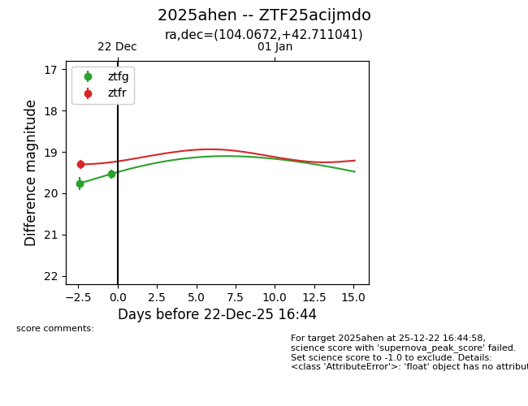
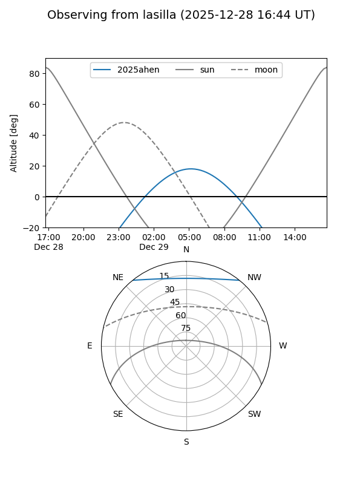
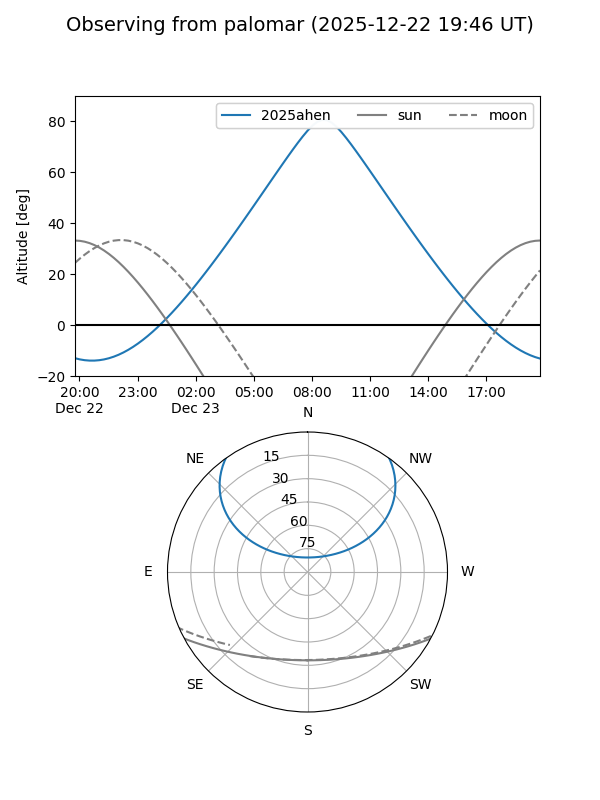
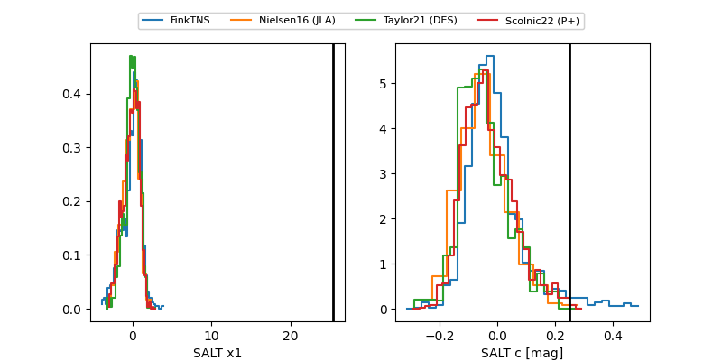

2025ahen
Target 2025ahen at 2025-12-31 17:00
Aliases and brokers:
FINK:
Lasair:
ALeRCE:
TNS:
YSE:
alt names
ZTF25acijmdo (ztf,fink_ztf)
2025ahen (tns,yse)
Coordinates:
equatorial (ra, dec) = 104.0672,+42.71104
equatorial (HMS+DMS) = 06:56:16.12,+42:42:39.75
galactic (l, b) = (173.8503,+18.84915)
Flags:
Photometry:
last ztfg=19.61, ztfr=19.17
3 ztfg, 3 ztfr detections
Lightcurve

Visibility


Additional plots
